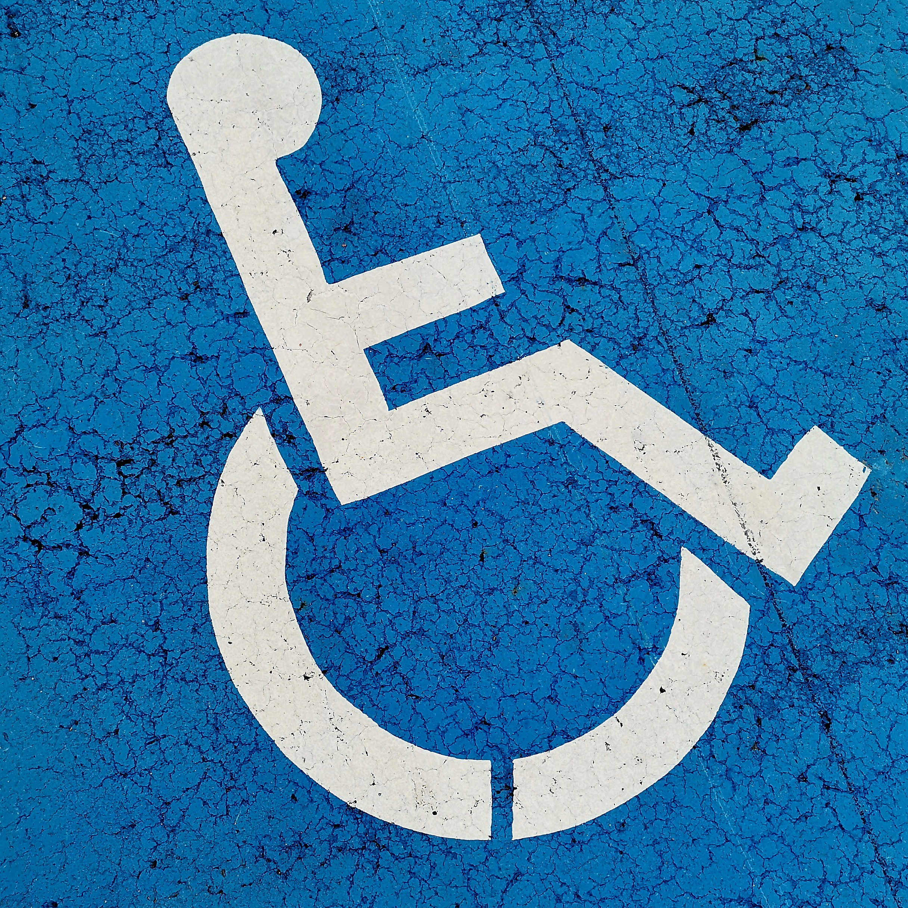

O Mundo da Acessibilidade
Espectro autista, o que é?
O transtorno do Espectro autista (TEA) é uma condição da qual o indivíduo tem suas interações sociais comprometidas, sendo um distúrbio do neurodesenvolvimento definido por desenvolvimento atípico, problemas na comunicação e na interação social, manifestações comportamentais e pode mostrar um repertório limitado de interesses e atividades.

Como a acessibilidade é importante para o cotidiano de um autista?
Uma pessoa autista tem algumas dificuldades em relação a interação interpessoal, isto é, relação com outras pessoas. Esse transtorno atrapalha a vida diária de um indivíduo com o espectro autista, assim uma conscientização para a população geral em relação à essa limitação ajudaria tais pessoas a serem melhores tratados e incluídos na sociedade. Mas, além disso, a melhor sinalização de espaços públicos, a utilização da técnica de edição para textos para pessoas com dificuldades de compreensão de leitura, o design responsável em uso de tecnologias e aplicativos, ajudariam, de certa forma, o cotidiano dos autistas, aumentando suas autonomias.